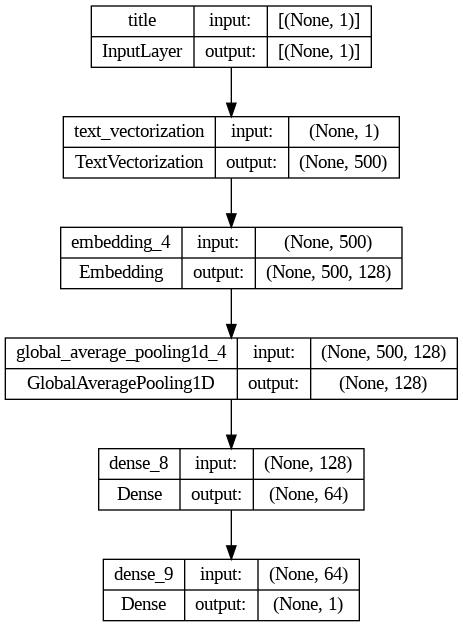
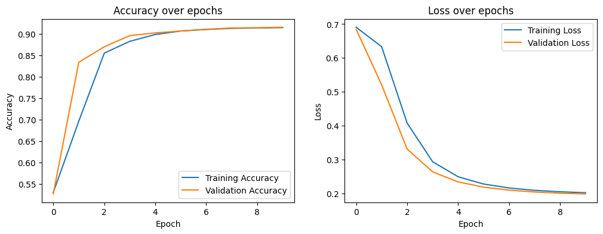
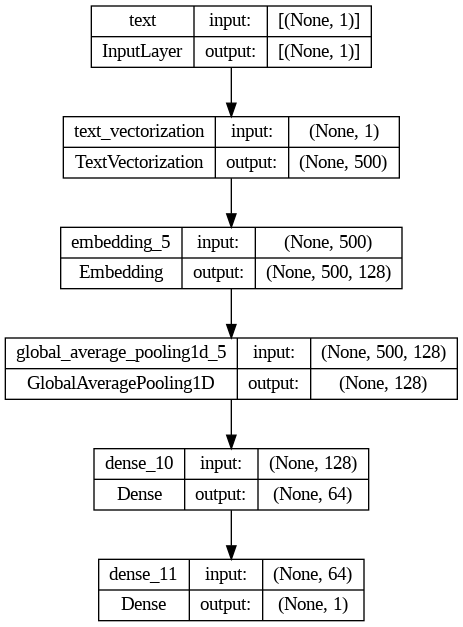
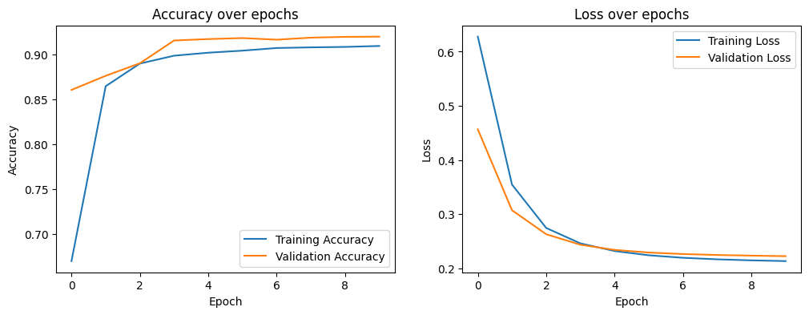
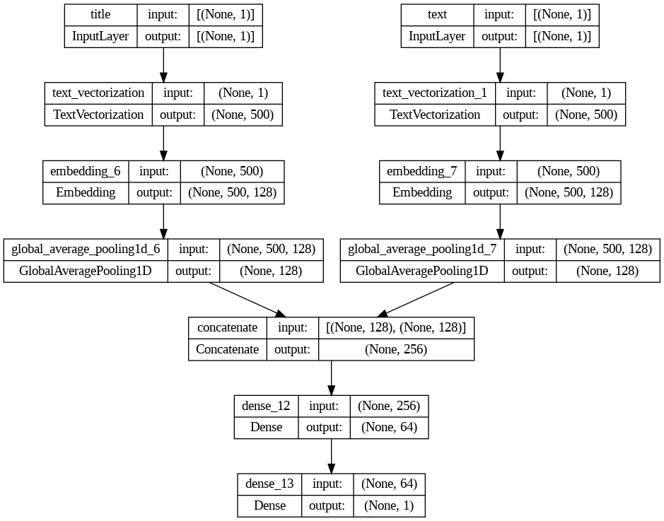
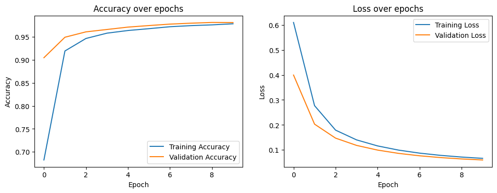
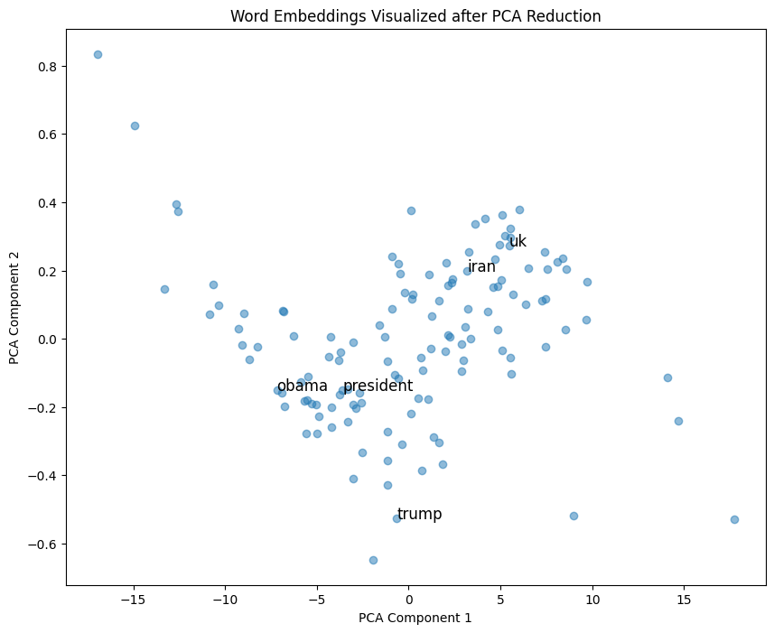

import pandas as pd
# Retrieve data from URL
train_url = "https://github.com/PhilChodrow/PIC16b/blob/master/datasets/fake_news_train.csv?raw=true"
df = pd.read_csv(train_url)Rampant misinformation — often called “fake news” — is one of the defining features of contemporary democratic life. In this Blog Post, we will develop and assess a fake news classifier using Tensorflow.

Data Preparation
The data comes from the article:
- Ahmed H, Traore I, Saad S. (2017) “Detection of Online Fake News Using N-Gram Analysis and Machine Learning Techniques. In: Traore I., Woungang I., Awad A. (eds) Intelligent, Secure, and Dependable Systems in Distributed and Cloud Environments. ISDDC 2017. Lecture Notes in Computer Science, vol 10618. Springer, Cham (pp. 127-138).
# Take a look at the data
df.head(5)| Unnamed: 0 | title | text | fake | |
|---|---|---|---|---|
| 0 | 17366 | Merkel: Strong result for Austria's FPO 'big c... | German Chancellor Angela Merkel said on Monday... | 0 |
| 1 | 5634 | Trump says Pence will lead voter fraud panel | WEST PALM BEACH, Fla.President Donald Trump sa... | 0 |
| 2 | 17487 | JUST IN: SUSPECTED LEAKER and “Close Confidant... | On December 5, 2017, Circa s Sara Carter warne... | 1 |
| 3 | 12217 | Thyssenkrupp has offered help to Argentina ove... | Germany s Thyssenkrupp, has offered assistance... | 0 |
| 4 | 5535 | Trump say appeals court decision on travel ban... | President Donald Trump on Thursday called the ... | 0 |
After retrieving the data from online repository, the next step would be creating a tensorflow dataset to feed the models.
# Import packages for text processing
import tensorflow as tf
from tensorflow.keras.layers.experimental.preprocessing import TextVectorization
import re
import string
import nltk
from nltk.corpus import stopwords
from nltk.tokenize import word_tokenize
# Download stopwords from NLTK
nltk.download('punkt')
nltk.download('stopwords')
def remove_stopwords(text):
# Get a list of stopwords in English
stop_words = set(stopwords.words('english'))
word_tokens = word_tokenize(text)
# Filter out the stopwords
filtered_text = [word for word in word_tokens if word.lower() not in stop_words]
return " ".join(filtered_text)
def make_dataset(df, batch_size=100):
# Remove stopwords from 'title' and 'text' columns
df['title'] = df['title'].apply(remove_stopwords)
df['text'] = df['text'].apply(remove_stopwords)
# Create a TensorFlow dataset
# The inputs and outputs need to be passed as separate arguments
dataset = tf.data.Dataset.from_tensor_slices(
({'title': df['title'].values, 'text': df['text'].values}, df['fake'].values)
)
# Batch the dataset
return dataset.batch(batch_size)
# Make dataset
dataset = make_dataset(df)
# Split the dataset for validation
train_size = int(0.8 * len(dataset))
val_size = len(dataset) - train_size
train_dataset, val_dataset = dataset.take(train_size), dataset.skip(train_size)[nltk_data] Downloading package punkt to /root/nltk_data...
[nltk_data] Unzipping tokenizers/punkt.zip.
[nltk_data] Downloading package stopwords to /root/nltk_data...
[nltk_data] Unzipping corpora/stopwords.zip.The base rate refers to the accuracy of a model that always makes the same guess (for example, such a model might always say “fake news!”). Let’s first determine the base rate for this data set by examining the labels on the training set. It tells us the worst acceptable accuracy for any model.
# Determine the most frequent label
label_counts = df['fake'].value_counts()
most_frequent_label = label_counts.idxmax()
# Calculate the base rate
base_rate = label_counts.max() / label_counts.sum()
# Print the base rate
print(f"Most Frequent Label: {most_frequent_label}")
print(f"Base Rate: {base_rate:.2f}")Most Frequent Label: 1
Base Rate: 0.52Text Vectorization
Text cannot be passed to the models directly, we need to first create vectorizing layers.
#preparing a text vectorization layer for tf model
size_vocabulary = 2000
def standardization(input_data):
lowercase = tf.strings.lower(input_data)
no_punctuation = tf.strings.regex_replace(lowercase,
'[%s]' % re.escape(string.punctuation),'')
return no_punctuation
title_vectorize_layer = TextVectorization(
standardize=standardization,
max_tokens=size_vocabulary, # only consider this many words
output_mode='int',
output_sequence_length=500)
text_vectorize_layer = TextVectorization(
standardize=standardization,
max_tokens=size_vocabulary, # only consider this many words
output_mode='int',
output_sequence_length=500)
title_vectorize_layer.adapt(train_dataset.map(lambda x, y: x['title']))
text_vectorize_layer.adapt(train_dataset.map(lambda x, y: x['text']))Define three models
Now we will use TensorFlow models to answer the following question:
When detecting fake news, is it most effective to focus on only the title of the article, the full text of the article, or both?
To address this question, we will create three (3) TensorFlow models.
- In the first model, we use only the article title as an input.
- In the second model, we use only the article text as an input.
- In the third model, we use both the article title and the article text as input.
def create_title_model(title_vectorize_layer, size_vocabulary):
# Add an input layer
title_input = tf.keras.Input(shape=(1,), dtype=tf.string, name='title')
# Add a vectorization layer defined earlier
x = title_vectorize_layer(title_input)
# Add a text embedding layer
x = tf.keras.layers.Embedding(size_vocabulary, 128)(x)
# Pooling and output
x = tf.keras.layers.GlobalAveragePooling1D()(x)
x = tf.keras.layers.Dense(64, activation='relu')(x)
output = tf.keras.layers.Dense(1, activation='sigmoid')(x)
# Return model
model = tf.keras.Model(title_input, output)
return modeldef create_text_model(vectorize_layer, size_vocabulary):
# Add an input layer
text_input = tf.keras.Input(shape=(1,), dtype=tf.string, name='text')
# Add a vectorization layer defined earlier
x = vectorize_layer(text_input)
# Add a text embedding layer
x = tf.keras.layers.Embedding(size_vocabulary, 128)(x)
# Pooling and output
x = tf.keras.layers.GlobalAveragePooling1D()(x)
x = tf.keras.layers.Dense(64, activation='relu')(x)
output = tf.keras.layers.Dense(1, activation='sigmoid')(x)
# Return model
model = tf.keras.Model(text_input, output)
return modeldef create_combined_model(title_vectorize_layer,text_vectorize_layer, size_vocabulary):
# Add seperate input layer
title_input = tf.keras.Input(shape=(1,), dtype=tf.string, name='title')
text_input = tf.keras.Input(shape=(1,), dtype=tf.string, name='text')
# Add seperate vectorization layer
title_features = title_vectorize_layer(title_input)
text_features = text_vectorize_layer(text_input)
# Add seperate embedding layer
title_features = tf.keras.layers.Embedding(size_vocabulary, 128)(title_features)
text_features = tf.keras.layers.Embedding(size_vocabulary, 128)(text_features)
# Pooling
title_features = tf.keras.layers.GlobalAveragePooling1D()(title_features)
text_features = tf.keras.layers.GlobalAveragePooling1D()(text_features)
# Concatenate the layers and output
x = tf.keras.layers.concatenate([title_features, text_features])
x = tf.keras.layers.Dense(64, activation='relu')(x)
output = tf.keras.layers.Dense(1, activation='sigmoid')(x)
# Return the model
model = tf.keras.Model([title_input, text_input], output)
return modelHere we have define all the functions to create the three models, and all we need to do is call these functions
# Create the models
model_title = create_title_model(title_vectorize_layer, size_vocabulary)
model_text = create_text_model(title_vectorize_layer, size_vocabulary)
model_combined = create_combined_model(title_vectorize_layer, text_vectorize_layer, size_vocabulary)After creating the models, we need to compile them before training
# Compile the models
model_title.compile(optimizer='adam', loss='binary_crossentropy', metrics=['accuracy'])
model_text.compile(optimizer='adam', loss='binary_crossentropy', metrics=['accuracy'])
model_combined.compile(optimizer='adam', loss='binary_crossentropy', metrics=['accuracy'])Start training
We can start training on the training set, and evaluating on the validation set. We will train each model for 10 epochs.
# Train model1
history = model_title.fit(train_dataset
, validation_data=val_dataset
, epochs=10)Epoch 1/10
180/180 [==============================] - 8s 40ms/step - loss: 0.6907 - accuracy: 0.5301 - val_loss: 0.6846 - val_accuracy: 0.5266
Epoch 2/10
180/180 [==============================] - 2s 9ms/step - loss: 0.6332 - accuracy: 0.6963 - val_loss: 0.5205 - val_accuracy: 0.8339
Epoch 3/10
180/180 [==============================] - 1s 7ms/step - loss: 0.4076 - accuracy: 0.8552 - val_loss: 0.3309 - val_accuracy: 0.8701
Epoch 4/10
180/180 [==============================] - 1s 7ms/step - loss: 0.2935 - accuracy: 0.8828 - val_loss: 0.2635 - val_accuracy: 0.8962
Epoch 5/10
180/180 [==============================] - 1s 8ms/step - loss: 0.2490 - accuracy: 0.8987 - val_loss: 0.2338 - val_accuracy: 0.9024
Epoch 6/10
180/180 [==============================] - 1s 8ms/step - loss: 0.2276 - accuracy: 0.9068 - val_loss: 0.2184 - val_accuracy: 0.9069
Epoch 7/10
180/180 [==============================] - 1s 7ms/step - loss: 0.2159 - accuracy: 0.9104 - val_loss: 0.2095 - val_accuracy: 0.9110
Epoch 8/10
180/180 [==============================] - 1s 7ms/step - loss: 0.2090 - accuracy: 0.9131 - val_loss: 0.2040 - val_accuracy: 0.9139
Epoch 9/10
180/180 [==============================] - 1s 7ms/step - loss: 0.2047 - accuracy: 0.9139 - val_loss: 0.2005 - val_accuracy: 0.9146
Epoch 10/10
180/180 [==============================] - 2s 8ms/step - loss: 0.2019 - accuracy: 0.9148 - val_loss: 0.1983 - val_accuracy: 0.9157/usr/local/lib/python3.10/dist-packages/keras/src/engine/functional.py:642: UserWarning: Input dict contained keys ['text'] which did not match any model input. They will be ignored by the model.
inputs = self._flatten_to_reference_inputs(inputs)By using plot_model function from keras, we can get an image of the model structure.
from tensorflow.keras.utils import plot_model
# Let's take a look at the model structure
plot_model(model_title, show_shapes=True, show_layer_names=True)
Next we can define a function to plot the training history of the model.
import matplotlib.pyplot as plt
def plot_history(history):
# Create two subfigures
plt.figure(figsize=(12, 4))
plt.subplot(1, 2, 1)
# Plot accuracy history
plt.plot(history.history['accuracy'], label='Training Accuracy')
plt.plot(history.history['val_accuracy'], label='Validation Accuracy')
plt.legend() # Add legend
# Add title and labels
plt.title('Accuracy over epochs')
plt.xlabel('Epoch')
plt.ylabel('Accuracy')
plt.subplot(1, 2, 2)
# Plot loss history
plt.plot(history.history['loss'], label='Training Loss')
plt.plot(history.history['val_loss'], label='Validation Loss')
plt.legend() # Add legend
# Add title and labels
plt.title('Loss over epochs')
plt.xlabel('Epoch')
plt.ylabel('Loss')
plt.show()plot_history(history)
The graph shows no sign of overfitting, and our model is doing well. Next we will do the same to the following two models.
# Train model2
history1 = model_text.fit(train_dataset
, validation_data=val_dataset
, epochs=10)Epoch 1/10
180/180 [==============================] - 14s 71ms/step - loss: 0.6277 - accuracy: 0.6702 - val_loss: 0.4567 - val_accuracy: 0.8609
Epoch 2/10
180/180 [==============================] - 2s 13ms/step - loss: 0.3547 - accuracy: 0.8650 - val_loss: 0.3074 - val_accuracy: 0.8766
Epoch 3/10
180/180 [==============================] - 2s 13ms/step - loss: 0.2747 - accuracy: 0.8902 - val_loss: 0.2632 - val_accuracy: 0.8905
Epoch 4/10
180/180 [==============================] - 2s 12ms/step - loss: 0.2463 - accuracy: 0.8990 - val_loss: 0.2437 - val_accuracy: 0.9159
Epoch 5/10
180/180 [==============================] - 2s 12ms/step - loss: 0.2322 - accuracy: 0.9023 - val_loss: 0.2343 - val_accuracy: 0.9175
Epoch 6/10
180/180 [==============================] - 3s 18ms/step - loss: 0.2243 - accuracy: 0.9046 - val_loss: 0.2293 - val_accuracy: 0.9186
Epoch 7/10
180/180 [==============================] - 3s 15ms/step - loss: 0.2197 - accuracy: 0.9076 - val_loss: 0.2266 - val_accuracy: 0.9168
Epoch 8/10
180/180 [==============================] - 2s 12ms/step - loss: 0.2169 - accuracy: 0.9083 - val_loss: 0.2249 - val_accuracy: 0.9191
Epoch 9/10
180/180 [==============================] - 2s 12ms/step - loss: 0.2149 - accuracy: 0.9088 - val_loss: 0.2237 - val_accuracy: 0.9200
Epoch 10/10
180/180 [==============================] - 2s 12ms/step - loss: 0.2136 - accuracy: 0.9098 - val_loss: 0.2227 - val_accuracy: 0.9202/usr/local/lib/python3.10/dist-packages/keras/src/engine/functional.py:642: UserWarning: Input dict contained keys ['title'] which did not match any model input. They will be ignored by the model.
inputs = self._flatten_to_reference_inputs(inputs)# Let's take a look at the model structure
plot_model(model_text, show_shapes=True, show_layer_names=True)
plot_history(history1)
# Train model3
history2 = model_combined.fit(train_dataset
, validation_data=val_dataset
, epochs=10)Epoch 1/10
180/180 [==============================] - 26s 89ms/step - loss: 0.6098 - accuracy: 0.6824 - val_loss: 0.3995 - val_accuracy: 0.9047
Epoch 2/10
180/180 [==============================] - 4s 24ms/step - loss: 0.2772 - accuracy: 0.9193 - val_loss: 0.2032 - val_accuracy: 0.9492
Epoch 3/10
180/180 [==============================] - 3s 17ms/step - loss: 0.1793 - accuracy: 0.9465 - val_loss: 0.1473 - val_accuracy: 0.9609
Epoch 4/10
180/180 [==============================] - 3s 16ms/step - loss: 0.1402 - accuracy: 0.9581 - val_loss: 0.1182 - val_accuracy: 0.9661
Epoch 5/10
180/180 [==============================] - 5s 26ms/step - loss: 0.1161 - accuracy: 0.9638 - val_loss: 0.0994 - val_accuracy: 0.9712
Epoch 6/10
180/180 [==============================] - 3s 16ms/step - loss: 0.0993 - accuracy: 0.9678 - val_loss: 0.0862 - val_accuracy: 0.9746
Epoch 7/10
180/180 [==============================] - 4s 20ms/step - loss: 0.0872 - accuracy: 0.9721 - val_loss: 0.0766 - val_accuracy: 0.9777
Epoch 8/10
180/180 [==============================] - 4s 25ms/step - loss: 0.0783 - accuracy: 0.9744 - val_loss: 0.0694 - val_accuracy: 0.9798
Epoch 9/10
180/180 [==============================] - 3s 15ms/step - loss: 0.0715 - accuracy: 0.9761 - val_loss: 0.0640 - val_accuracy: 0.9813
Epoch 10/10
180/180 [==============================] - 3s 16ms/step - loss: 0.0664 - accuracy: 0.9784 - val_loss: 0.0599 - val_accuracy: 0.9811# Let's take a look at the model structure
plot_model(model_combined, show_shapes=True, show_layer_names=True)
plot_history(history2)
From the result, we can tell that the combined model, which uses title and text as input, has the highest accuracy of 0.9813.
Evaluation of the model
In this section, we will evaluate the model on an unseen test set.
# Retrieve data from URL
test_url = "https://github.com/PhilChodrow/PIC16b/blob/master/datasets/fake_news_test.csv?raw=true"
df_test = pd.read_csv(test_url)
# Make testset
test_dataset = make_dataset(df_test)# Get accuracy
loss, accuracy = model_combined.evaluate(test_dataset)
print(f"Test Loss: {loss}, Test Accuracy: {accuracy}")225/225 [==============================] - 3s 11ms/step - loss: 0.0689 - accuracy: 0.9751
Test Loss: 0.06891239434480667, Test Accuracy: 0.9751436710357666Visualization of Embedding
To better understand the text embedding, we can map the vectors to 2D with PCA, and intepret the relative locations of the words. Words with similar semantic meaning would tend to be closer in distance.
# Get embedding weights from model
embedding_layer = model_combined.get_layer('embedding_6')
embeddings = embedding_layer.get_weights()[0]from sklearn.decomposition import PCA
# Map the embeddings to 2D
pca = PCA(n_components=2)
reduced_embeddings = pca.fit_transform(embeddings)# Get vocab lists and determine words of interest for visualization
vocab = title_vectorize_layer.get_vocabulary()[:128]
word_indices = {word: idx for idx, word in enumerate(vocab)}
words_to_visualize = ['trump', 'obama', 'president', 'iran', 'uk']import matplotlib.pyplot as plt
from sklearn.decomposition import PCA
def plot_embeddings(embeddings, vocabulary, words_to_visualize):
# Reducing dimensionality of embeddings
pca = PCA(n_components=2)
reduced_embeddings = pca.fit_transform(embeddings)
# Create a dictionary for word indices
word_indices = {word: idx for idx, word in enumerate(vocabulary)}
# Get x and y coordinates
x = reduced_embeddings[:, 0]
y = reduced_embeddings[:, 1]
# Plotting
plt.figure(figsize=(10, 8))
plt.scatter(x, y, alpha=0.5)
# Annotate in the graph
for word in words_to_visualize:
if word in word_indices:
idx = word_indices[word]
plt.annotate(word, (x[idx], y[idx]), fontsize=12)
else:
print(f"Word '{word}' not found in vocabulary.")
# Add labels and title
plt.xlabel('PCA Component 1')
plt.ylabel('PCA Component 2')
plt.title('Word Embeddings Visualized after PCA Reduction')
plt.show()
plot_embeddings(embeddings, vocab, words_to_visualize)
We can see that Obama, President, and Trump are close as they are related to politics. UK and Iran are close since they are both nations.